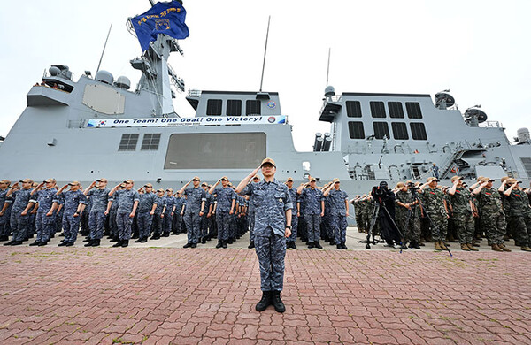
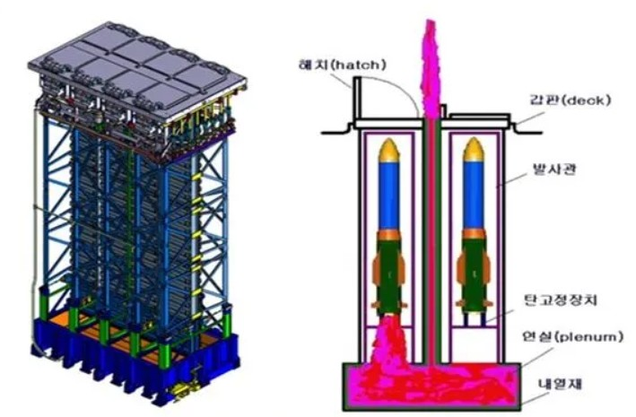
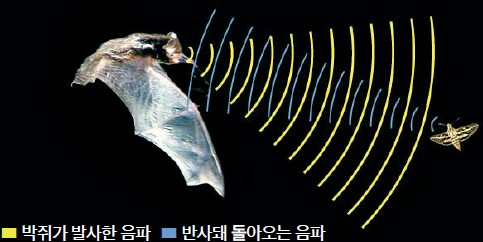

대한민국 이지스 구축함의
함장으로 임명합니다.
아래의 조타륜을 회전시켜보세요
데이터를 불러오는 중 · 0%
한국어
KR
English
EN
항해 시작
EXPEDITION SYSTEM / MOBILE UNIT
EN
!
PROXIMITY ALERT
대함 미사일이 접근하고 있습니다.
대공 미사일 발사



이 게임을 실행하려면 JavaScript가 필요합니다. / JavaScript is required to run this game.